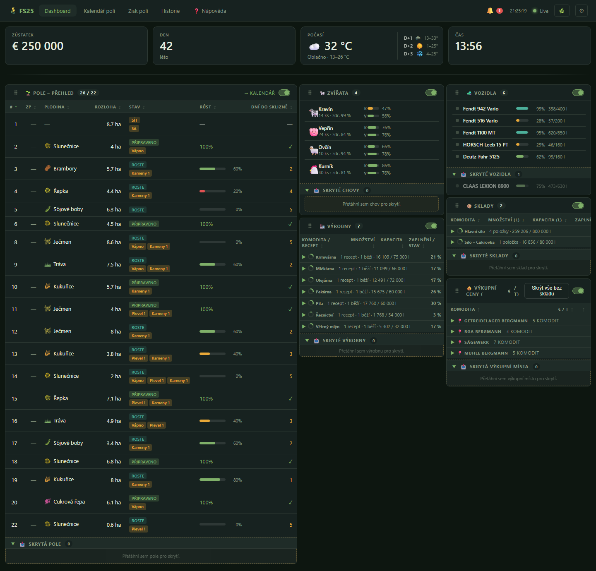
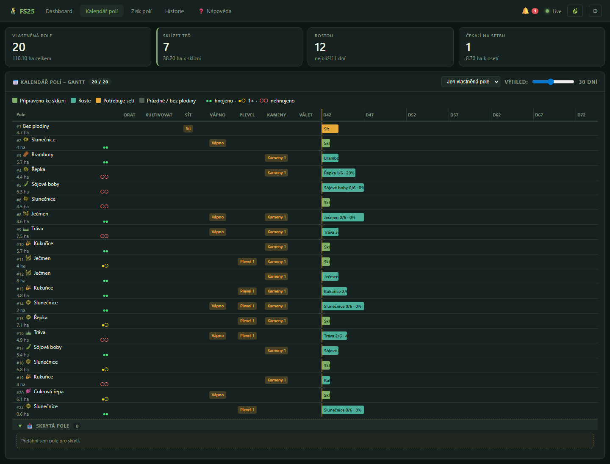
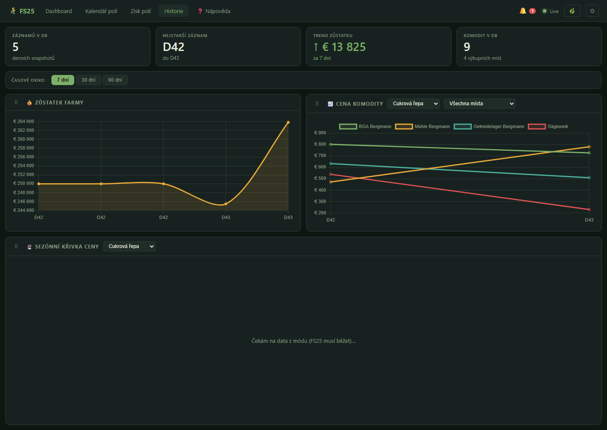

📖 Nápověda k FS25 Dashboardu
Real-time webový dashboard pro Farming Simulator 25. Sleduje pole, vozidla, stáda, sklady, výrobny a ceny komodit přímo z běžící hry — bez nutnosti přepínat na monitor v autě.
Úvod
Dashboard se skládá ze tří částí, ale tobě jako uživateli stačí znát jednu:
tuto webovou stránku. Otevřeš ji v prohlížeči (typicky
http://localhost:3000 nebo http://<IP-PC>:3000
z tabletu/telefonu), data tečou automaticky.
Pokud na stránce nejsou žádná čísla a tečka v pravém horním rohu svítí šedě nebo červeně, je problém na úrovni serveru nebo módu — viz Když něco nejde.
Orientace v navbaru
Lišta nahoře je všude stejná:
| Prvek | K čemu je |
|---|---|
| 🌾 FS25 | Logo, klik nedělá nic — jen značka. |
| Dashboard / Kalendář polí / Zisk polí / Historie / Nápověda | Přepínání mezi stránkami. Aktivní stránka je zvýrazněná. |
| 🔔 Zvoneček | Notifikace — palivo, krmení, plné sklady. Číslo = počet aktivních upozornění. Klik = rozbalení seznamu. Detail. |
| Čas aktualizace | Kdy přišel poslední update z hry. |
| Tečka stavu | 🟢 živé spojení · 🟡 obnovuje se · 🔴 chyba · ⚪ čeká. |
| ⚙ Nastavení | Otevře modal se 3 záložkami — Notifikace, Sekce, Vzhled. Detail. |
| 🎨 Motiv | Rychlý přepínač motivu (cyklus 4 motivů). Detail. |
Hlavní dashboard
Domovská stránka /. Nahoře 4 KPI karty s tím nejdůležitějším,
pod nimi 6 sekcí s detaily.

KPI karty
| Karta | Co ukazuje |
|---|---|
| Zůstatek | Aktuální peníze + delta proti včerejšku (↑/↓ barevně). Vpravo přes oddělovač strip posledních 3 dnů — zjistíš na první pohled, jestli farma generuje peníze nebo prodělává. |
| Počasí | Vlevo aktuální (ikona + teplota), vpravo přes oddělovač 5denní předpověď (den, ikona, min–max°). Plánuj sušení sena podle toho. |
| Den | Herní den + sezóna/měsíc. |
| Čas | Herní čas (ne reálný). |
🌱 Pole – přehled
Stručná tabulka vlastněných polí. Pro Gantt s časovou osou jdi na Kalendář polí.
- ID# — interní engine ID pole (ne číslo parcely).
- ZP — číslo parcely (to, co vidíš ve hře v menu).
- Stav — tag „Připraveno / Roste / Sít / Zvadlé / Strniště“.
- Růst % a dní do sklizně.
- Chips potřeb (Orat / Kultivovat / Sít / Vápno / Plevel / Kameny / Válet) — co je potřeba pro maximální výnos. Zobrazují se jen ty potřeby, které jsou ve hře zapnuté v nastavení.
- Skrýt × — schová pole do podsekce „Skryté“ (collapse).
- Flash při změně — když pole dozraje nebo se sklidí, řádek krátce blikne zeleně/červeně.
🚜 Vozidla
Karty (ne tabulka), seskupené po vlastnících. Co každá karta ukazuje:
- Stavová tečka — modrá = motor jede, šedá = stojí.
- Název + typ a motohodiny.
- AdBlue % pokud má nádržku.
- Bar paliva v procentech + l/kapacita.
Vozidla bez palivové nádrže (kolečka, vleky, pluhy bez motoru) se v této sekci nezobrazují. Skrývání funguje přes drag & drop — přetáhni kartu dolů do zóny „Skryté“. Vrátit ji zpátky můžeš stejným způsobem.
🐄 Zvířata
- Ikona + název farmy, počet kusů, produktivita %.
- 🐣 Reprodukční badge — % nejvyspělejšího stáda. Zelená ≥ 90 % = brzy budou mláďata.
- Bary jsou rozdělené do dvou sloupců: vlevo vstupy (co stáj spotřebovává — nízké % = doplnit), vpravo výstupy (co stáj produkuje — vysoké % = odvézt). Zobrazují se jen ty, které stáj reálně používá (Králík/Křepelka nemají žádné výstupy).
| Zkr. | Sloupec | Význam | Co znamená vysoké % |
|---|---|---|---|
K | vlevo (vstupy) | Krmivo | OK (plný žlab) |
V | vlevo (vstupy) | Voda | OK |
P | vlevo (vstupy) | Podestýlka (sláma) | OK |
M | vpravo (výstupy) | Mléko | Špatně — silo plné, mléko se ztrácí |
H | vpravo (výstupy) | Hnůj (suchý) | Špatně — odvézt na pole |
Kj | vpravo (výstupy) | Kejda (tekutý hnůj) | Špatně — odčerpat |
M (Mléko) ≠ H (Hnůj) — u krav a koz vidíš M, H i Kj naráz, protože stáj produkuje mléko (k prodeji) a zároveň hnůj + kejdu (k odvozu na pole).
- ⚠ Alert badge — „Doplnit!“ když dojde krmivo/voda/sláma, „Odvézt!“ když přeteče výstup.
- Červené podbarvení řádku se zapne jen při aktivním alertu, ne staticky.
- Klik na řádek = detail modal: jednotlivá stáda s plemenem, věkem, zdravím a reprodukcí.
📦 Sklady
Tabulka skladů a sil s množstvím a zaplněním. Hlavní fíčura tady je flash zvýraznění:
- 🟢 zelené pozadí 10 s = množství vzrostlo (něco se vysypalo do skladu)
- 🔴 červené pozadí 10 s = množství kleslo (prodáno, použito ve výrobě)
Vypnout/zapnout flash můžeš přepínačem v pravém rohu hlavičky sekce. Skrytí položky × jde uložit do collapsible podsekce „Skryté“.
🏭 Výrobny
Tabulka výroben (mlékárny, pekárny, mlýny…). Sleduje vstupy/výstupy a stav. Flash funguje na úrovni hlavičky i jednotlivých položek (jeden přepínač řídí oboje).
💰 Výkupní ceny
Aktuální výkupní ceny u všech sběrných míst na mapě. Tlačítko „Skrýt vše bez skladu“ odfiltruje na komodity, které aktuálně vlastníš (jdou prodat hned).
📅 Kalendář polí
Gantt-style časová osa /calendar.html. Cíl: na jednom pohledu
vidět, která pole čekají na co a kdy se hodí kombajn.

Pevných 7 sloupců potřeb
Vedle popisku každého pole je mřížka Orat | Kultivovat | Sít | Vápno | Plevel | Kameny | Válet. Každá buňka obsahuje buď chip s potřebou, nebo zůstává prázdná — sloupce jsou tedy zarovnané a snadno se porovnává více polí najednou.
Které sloupce vidíš, řídí nastavení hry (Plevel, Kameny, Vápno, Orba). Pokud máš v menu „Vyžaduje orbu = Vypnuto“, sloupec Orat se nikdy nerozsvítí.
Barevné pruhy
- Připraveno — pole je dozrálé, jeď sklízet.
- Roste — pruh ukazuje očekávanou délku dozrávání.
- K setbě — pole čeká.
- Sklizeno (strniště) — vždy potřebuje znovu kultivovat + sít.
- Zvadlé — propásl jsi okno sklizně, jediná cesta dál je kultivovat a začít znovu.
Hnojení (●●/●○/○○)
Badge u každého pole: ●● plně pohnojeno (zelená), ●○ jedna dávka chybí (žlutá), ○○ nepohnojeno (červená).
Časový rozsah
Slider 5–60 dní. Defaultně 14. Today marker (svislá čára) je vždy úplně vlevo.
Klik na pruh = detail
Modal s plodinou, fází, ETA sklizně, est. denem sklizně a kompletním seznamem potřeb (OK / ANO / POTŘEBA).
📈 Historie
Stránka /history.html obsahuje 3 grafy z dlouhodobých záznamů
serveru. Server píše JSONL soubory do data/ a načítá je do paměti.

Volba období
Rychlé tlačítka 7 / 30 / 90 dní, default 7.
Zůstatek farmy (line)
Historický průběh peněz po hracích dnech. Tooltip ukazuje přesnou částku.
Cena komodity (multi-line)
- Selector komodity: vlastněné jsou nahoře v oddělené optgroup — co můžeš prodat hned, vidíš první.
- Filtr sběrných míst: nabízí jen místa, která aktuálně vykupují vybranou komoditu (žádné prázdné křivky).
- Každé sběrné místo je v grafu zvlášť obarvená čára.
Sezónní křivka (bar, full-width)
12 měsíců dopředu s očekávanými cenovými násobiteli. Top 3 měsíce jsou zelené („nejlepší prodej“), spodní 3 červené („ztráta“), aktuální měsíc je orámovaný. Nad grafem souhrn: „nyní €XXX · nejlépe v Březen €XXX (za N dní) · nejhůř …“
💵 Zisk polí
Stránka /profit.html — pokus o per-pole P&L analýzu.
4 KPI nahoře
- Celkový zisk (barevně) — kolik polí je v plusu, kolik v mínusu.
- Celkové výnosy (zelená) — co přiteklo ze sklizní.
- Celkové náklady (červená) — odhad nákladů na setí.
- Aktivita — počet setí + sklizní.
Tabulka per pole
Pole #, poslední plodina, počet setí/sklizní, náklady, výnosy, zisk a stav („✓ N sklizní“ / „⏳ Roste“ / „—“).
Tabulka nedávných událostí
Chronologický log setí 🌱 (žlutě) a sklizní 🚜 (zeleně) s denem, polem, plodinou, plochou a finanční změnou.
Společné funkce
⚙ Nastavení
Klik na ozubené kolo otevře modal se 3 záložkami. Uložit je vždy vpravo dole, × vpravo nahoře.
| Záložka | Co tam najdeš |
|---|---|
| 🔔 Notifikace | Master přepínač, prahy (krmivo zvířat %, palivo vozidel %, prázdné pole dnů, cooldown mezi opakovanými notifikacemi v minutách) a test tlačítko. |
| 📋 Sekce | iOS-style přepínače pro každou sekci hlavního dashboardu — sekce, kterou nepotřebuješ (například Výrobny při hraní bez produkčního řetězce), jednoduše vypneš a zmizí. |
| 🎨 Vzhled | 4 motivy — dark-green (default), dark-blue, light, high-contrast. Klik aplikuje okamžitě napříč všemi stránkami. |
🔔 Zvoneček
Vedle WebSocket tečky. Číslo nad ikonou = počet aktivních alertů. Klik rozbalí seznam.
- Skupiny alertů: krmivo zvířat, voda, sláma, výstup (mléko/hnůj), pole připravené ke sklizni, palivo, plné sklady.
- Per-řádek × = skryje konkrétní alert, dokud se nezmění obsah (např. přibude další pole). Otisk dělá kombinace klíče skupiny + seřazených názvů položek.
- „Skrýt vše“ dole = smaže všechny aktuální alerty jednou ranou.
- Klik na alert = scroll na cílovou sekci + pulz animace.
⚡ Flash zvýraznění
Krátké barevné podbarvení řádku/karty, když se hodnota mění:
- 🟢 zelená 10 s — hodnota vzrostla
- 🔴 červená 10 s — hodnota klesla
Per-sekce přepínač v pravém rohu hlavičky (iOS switch s tooltipem). Stav se ukládá lokálně.
Pod kapotou: detekce změny mezi tiky, ochrana proti „pinned green“ (sklad, do kterého padá +1 l/tick, nesvítí pořád) a dedup při duplicitních názvech (dva sklady „Sklad balíků u kravína“ se nepletou).
🎨 Motivy vzhledu
5 motivů, přepínají se tlačítkem 🎨 v navbaru nebo v Nastavení:
Default. Tlumený les + zralé obilí. Šetří oči.
Chladnější noční paleta.
Pro denní hraní u okna nebo na tabletu.
Černá + žlutá + bílá. Maximální čitelnost.
GIANTS limetková + zralé obilí. Pocit z herního HUD.
💾 Co si pamatuje prohlížeč
V localStorage pod prefixem fs25.dash.v1.*:
- theme — zvolený motiv
- hiddenVehicles / hiddenStorages / hiddenProductions — co jsi skryl drag-dropem nebo ×
- hiddenSections — vypnuté panely z Nastavení > Sekce
- flashEnabled — mapa „která sekce má flash zapnutý“
- notifications — prahy a master přepínač
- bell-dismissed — fingerprinty zavřených alertů (jen session)
Vymazat všechno → DevTools (F12) > Application > Local Storage >
smaž fs25.dash.v1.* klíče a refresh.
❓ Časté otázky
- Proč ID# a ZP nesouhlasí?
- To jsou dvě různá čísla. ID# je engine ID (interní), ZP je číslo parcely (to vidíš ve hře). Mapy je nemívají stejné.
- Jak vrátit skryté pole / vozidlo / sklad?
- Pole + sklad: rozbal podsekci „Skryté“ na konci sekce a klikni na odhalit. Vozidla: přetáhni kartu zpět nahoru drag & dropem.
- Proč u jednoho stáda nevidím bary M nebo Kj?
- Bary se zobrazují jen pro výstupy, které dané stádo skutečně má. Krávy mléčné mají M, masné ne. Ovce nemají Kj, prasata ano.
- Flash u skladu svítí pořád, co s tím?
- Zkontroluj v Nastavení > Sekce, jestli máš Sklady zapnuté. Pokud ano, jde nejspíš o velmi pomalý kontinuální přírůstek (např. mlékárna +1 l/min). Aktuální verze má guard, který by tomu měl bránit — kdyby přetrvávalo, napiš issue.
- Zvíře má 100% reprodukci, ale nic se neděje.
- Reprodukce funguje ve hře po vlnách. 100 % znamená „připraveno“, samotný porod proběhne v dalším herním cyklu (může to být i pár herních dnů). Sleduj klesající procento — to znamená, že nový mladý kus vznikl a počítadlo se vyresetovalo.
- Předpověď počasí ukazuje jen aktuální, ne další dny.
- Mód čte forecast z
g_currentMission.environment.weather.forecast. Některé mapy předpověď nepublikují — pak server posílá jen aktuální stav. Není to bug dashboardu. - Cena komodity ukazuje „Čekám na data z módu“.
- Server potřebuje aspoň pár tiků, aby zaznamenal historii cen. Po
~30 vteřinách reálného času hry by se to mělo objevit. Pokud ne,
podívej se do
data/prices.jsonl, jestli vůbec něco píše.
🛠 Když něco nejde
Tečka v navbaru je červená nebo šedá
- Zkontroluj, jestli běží Node.js server
(
start.batnebonpm startv složceServer/). - Zkontroluj, jestli máš v FS25 zapnutý mód „FS25 Dashboard“
a hru jsi spustil (mód píše do
dashboard_data.json). - F12 v prohlížeči > Console — uvidíš WebSocket chybu s konkrétním detailem.
Stránka se načte, ale čísla jsou prázdná / „—“
Server běží, ale ještě nedostal první payload z módu. Počkej 2–5 vteřin. Pokud trvá déle, ve hře otevři menu a zavři ho (mód píše jen za běhu vlastního ticku).
Notifikace nepřicházejí, i když mám prahy nastavené
- V Nastavení > Notifikace ověř, že Master přepínač je zapnutý.
- Zkus Test tlačítko — pošle dummy alert. Pokud nepřijde, prohlížeč nepovolil notifikace systému.
- Cooldown brání spamu — po reagování na alert se nezopakuje minimálně X minut.
Layout se rozsypal, sekce na sebe lezou
Masonry layout přepočítává pozice na resize. Pokud po změně rozlišení vypadá divně, refresh (F5) opraví. Drag-and-drop pořadí sekcí se neukládá — pořadí je defaultní pro každý load.
Chci úplný reset
- F12 > Application > Local Storage > smaž
fs25.dash.v1.* - Vymaž
data/*.jsonlv Server složce jen pokud chceš smazat i historii. - F5